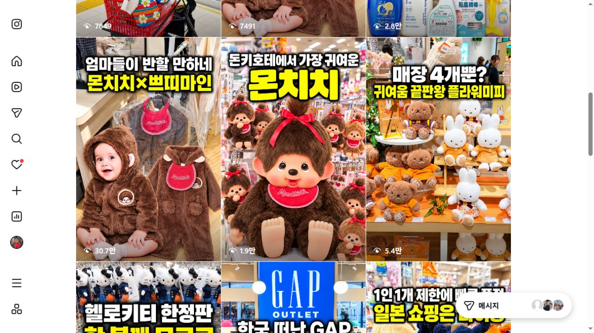

01 첫 구매
“이번 주말 고기,
이렇게 고르면 되겠네.”
가족 구이·평일 한 끼처럼 먹는 상황에서 시작합니다. 실제 부위와 손질 장면을 보여주고, 정산축산이 추천하는 선택 기준을 설명합니다.
콘텐츠를 본 다음메뉴·중량 안내 → 플레이스 → 포장·예약 문의
정산축산을 위한 SNS 운영 제안
20년 손질의 기준을 콘텐츠로.
매장 방문·단골·거래처 문의로 연결합니다.
2대째 이어온 직접 지육 작업과 도소매의 강점.
고객이 알아보고, 선택할 이유로 만들겠습니다.
정산축산의 강점에서 출발합니다
직접 고기를 손질하고, 도소매를 함께하는 매장.
그 차이를 ‘전문용어’보다 고객의 저녁 식탁에서 보여주겠습니다.
처음 살 때“오늘 구워 먹을 고기, 뭘 골라야 하지?”
다시 살 때“지난번 그 고기, 오늘도 살 수 있나?”
거래처를 찾을 때“우리 가게에 맞게 손질·납품이 될까?”
이 세 질문에 답하는 콘텐츠와 구매 안내를 쌓아,
정산축산을 고르고 다시 찾을 이유를 만들겠습니다.
첫 구매 → 다시 구매 → 거래처 문의
보고 끝나는 소개에서 한 걸음 더.
원하는 고기를 고르고, 실제 매장에 묻게 만들겠습니다.
가족 구이·평일 한 끼처럼 먹는 상황에서 시작합니다. 실제 부위와 손질 장면을 보여주고, 정산축산이 추천하는 선택 기준을 설명합니다.
판매 가능한 부위와 활용법을 꾸준히 남깁니다. 가격·중량·판매 기준일과 구매 방법을 함께 안내해, 손님이 매번 처음부터 묻는 부담을 줄입니다.
취급 부위와 실제 작업 기준을 보여줍니다. 납품 문의는 ‘품목·필요 중량·손질 규격·납품 지역’을 받아, 거래 조건을 이야기할 수 있는 창구로 연결합니다.
실제 취급·납품 가능한 조건만 안내합니다. 주문 접수와 견적 확정은 정산축산의 기존 담당 창구에서 진행합니다.
첫 달에 할 일
저희가 기획·편집·문안·게시를 맡고,
매장에서는 가이드에 맞춰 손질·진열 원본을 보내주시는 방식입니다.
우선 팔 부위, SNS 계정, 가격·중량·예약 기준을 맞춥니다.
소매 고객과 도매 거래처 중 먼저 늘릴 쪽을 정합니다.
용도에 맞는 부위 선택 → 실제 진열 → 매장 구매 안내
손질 장면 → 정산축산의 작업 기준 → 선택할 이유
실제 판매 부위·중량·가격 기준 → 포장·예약 안내
취급 부위·작업 규격 → 납품 가능 조건 → 담당자 문의
부위 선택표, 구매 FAQ, 손질 기준, 매장·도매 안내로 확장합니다. 콘텐츠 주제는 먼저 팔고 싶은 부위와 소매·도매 우선순위에 맞춰, 월 제작 수량 안에서 함께 정합니다.
울산 방문 촬영은 별도입니다. 원본 제공 주기·검토 일정·운영 채널은 시작 전에 정하며, 채널마다 제작 수량이 추가되는 방식은 아닙니다.
최소 6개월을 제안하는 이유
이번 달의 부위 설명은 다음 달의 신규 고객도 봅니다.
손질 기준·활용법·구매 안내가 자체 채널에 쌓이면,
고객이 정산축산을 알아볼 근거가 늘어납니다.
한 번의 확산보다, 매달 무엇이 문의로 이어졌는지 확인하겠습니다. 조회·저장·문의와 실제 구매를 구분하고, 확인되는 반응에 맞춰 다음 달 주제를 조정합니다.
먼저 배송 가능한 품목·포장·냉장배송·기존 판매처를 확인합니다. 준비된 상품부터 콘텐츠와 판매 링크를 연결하고, 자사몰 구축이나 라이브 진행이 필요하면 별도 옵션으로 제안하겠습니다.
현재 운영하는 실제 사례
반찬·김치찜 매장 · 조가네맛곳간
사장님 이야기
릴스 누적 조회
 실제 릴스 보기 ↗
실제 릴스 보기 ↗실제 고객사의 SNS 브랜딩·콘텐츠와 카카오톡채널·자사몰·라이브 연결을 수행하고 있습니다.
일본 현지 콘텐츠·판매 · 쇼핑왕와이비
몬치치 아동복
릴스 누적 조회

실제 릴스 보기 ↗일본 현지 콘텐츠·라이브와 자체 자사몰을 운영합니다. 보는 관심을 살 곳으로 연결하는 일을 지금도 하고 있습니다.
2026.10.21 공개 릴스 목록 확인 기준. 조회수는 주문·매출이 아니며 같은 결과를 보장하지 않습니다. 조가네는 실제 고객사, 쇼핑왕와이비는 자체 운영 사례로 업종이 다릅니다. 사례의 전체 수행 범위가 이번 상품에 모두 포함되는 것은 아닙니다.
이 시스템을 맡을 사람 · 와이비
8평 매장 운영에서 전국 프랜차이즈 확장까지.
콘텐츠를 만드는 일과 실제 판매 운영을 함께 해온 사람입니다.


2024 · GRIP그립 신인판매왕
2025 · GRIP팔아야산다2 우승
외식업의 현장 경험에 식품 온라인판매 운영을 더해, 정산축산의 콘텐츠와 구매 안내를 함께 설계하겠습니다.
전국 확장 경력은 2012–2023년 참여 이력이며 현재 가동 점포 수를 뜻하지 않습니다.
정산축산 맞춤 운영 상품
GROWTH 최소 6개월
정기 제공 원본을 활용한 원격 운영
GROWTH 월 운영비
월198만원
VAT 포함 · 공급가 월 180만원
최소 6개월 운영
총 계약금액 1,188만원 (VAT 포함)
월별 지급 방식·시작일은 계약 전 협의 확정
처음부터 명확하게 안내합니다
손질·진열·제품 원본의 촬영 가이드와 필요한 장면을 안내합니다. 울산 방문·출장 촬영은 포함하지 않습니다. 원본을 정기적으로 전달할 수 있는지 먼저 함께 확인하겠습니다.
별도 옵션: 현장 촬영·출연·조리, 자사몰 구축·리뉴얼·상품 등록, 카카오톡채널 구축·메시지 운영, 라이브 환경 구축·진행, 광고·체험단 비용, 주문·배송·환불 CS. 체험단 모집·리뷰 보장형 상품이 아닙니다.
소매/도매 우선순위, 운영 채널, 원본 제공·검토 일정, 수정 범위, 계약 시작일·월별 지급일을 정합니다. 제작량은 채널별 추가 수량이 아닌 월 총량입니다.
전국 배송 여부·판매 조건은 확인 후 안내합니다. 매출·검색 순위·조회수는 보장하지 않으며, 기존 판매 시스템을 임의로 변경하지 않습니다.
첫 대화는 가볍게 시작하셔도 됩니다
숨고 채팅에 우선순위 한 가지만 알려주세요.
그 방향에 맞춰 첫 콘텐츠와 문의 안내를 구체화하겠습니다.
복사한 뒤 이 제안서를 받은 숨고 채팅에 보내주세요.